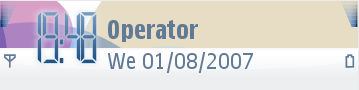
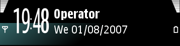

Digital
clock
The digital clock consists of masked number and separator character
images. Each individual number and separator consists of two images.
The first image contains the character and possible effect color or
texture. The second image contains a hard mask to create clear
characters. The images overlap in the clock area in accordance with a
fixed position. The digital clock is created in two steps:
- Background effect creation
- Character creation
To create the background effect, use the first image. Mask the
character image with the second image in order to put different types
of effects, such as a shadow or halo to the background. When displayed
in a mobile phone, the images overlap one another. The number or
separator character images get masked from the second image, so the
characters are drawn on top and the effects are on the underlying
layer. In order to ensure that the characters do not overlap, they need
to be placed in a defined ‘safe’ area.
The figure below illustrates a default digital clock and a
customized digital clock.
 
Figure:
Default
and customized digital clock